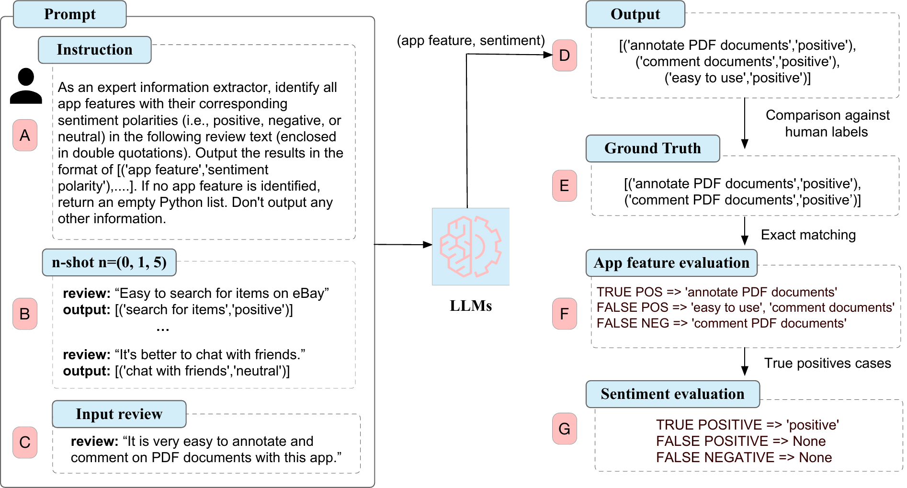
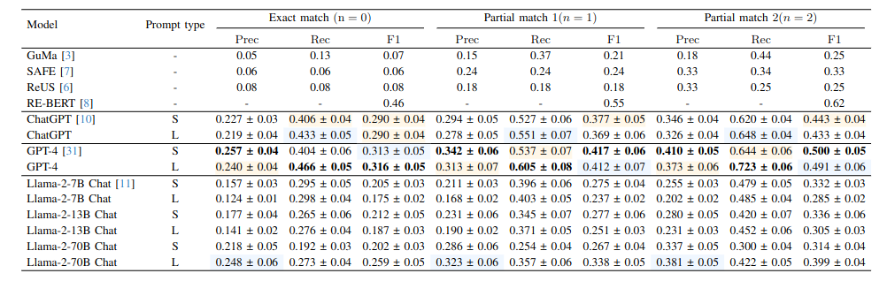
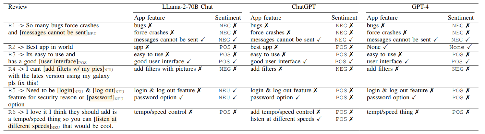

A Fine-grained Sentiment Analysis of App Reviews using Large Language Models: An Evaluation Study |
| Faiz Ali Shah*, Ahmed Sabir*, Rajesh Sharma |
| University of Tartu, Institute of Computer Science, Tartu, Estonia |

|
|
|
|
Analyzing user reviews for sentiment towards app features can provide valuable insights into users' perceptions of app functionality and their evolving needs. Given the volume of user reviews received daily, an automated mechanism to generate feature-level sentiment summaries of user reviews is needed. Recent advances in Large Language Models (LLMs) such as ChatGPT have shown impressive performance on several new tasks without updating the model's parameters \ie using zero or a few labeled examples. Despite these advancements, LLMs’ capabilities to perform feature-specific sentiment analysis of user reviews remain unexplored. This study compares the performance of state-of-the-art LLMs, including GPT-4, ChatGPT, and LLama-2-chat variants, for extracting app features and associated sentiments under 0-shot, 1-shot, and 5-shot scenarios. Results indicate the best-performing GPT-4 model outperforms rule-based approaches by 23.6% in f1-score with zero-shot feature extraction; 5-shot further improving it by 6%. GPT-4 achieves a 74% f1-score for predicting positive sentiment towards correctly predicted app features, with 5-shot enhancing it by 7%. Our study suggests that LLM models are promising for generating feature-specific sentiment summaries of user reviews.
Comparison of zero-shot, 1-shot, and 5-shot performances of LLMs for extracting app features from app reviews using exact and partial match strategies. (Second best result (in Blue) and Third best result (in yellow) ). The (*) refers to the model fine-tuned on a large app review dataset.

The table below shows Feature-sentiment pairs extracted by LLama-2-70B, ChatGPT, and GPT-4 models from user reviews Human-labeled features in reviews are highlighted and enclosed in brackets. POS, NEU, and NEG show true sentiment polarity labels in reviews. The ✗ symbol indicates an incorrect prediction, while the ✓symbol indicates a correct prediction using the partial match 2 evaluation strategy.

@inproceedings{shah2024fine,
title={A Fine-grained Sentiment Analysis of App Reviews using Large Language Models: An Evaluation Study},
author={Shah, Faiz Ali and Sabir, Ahmed and Sharma, Rajesh},
journal={},
volume={},
pages={},
year={2024}
}
Contact: Faiz Ali